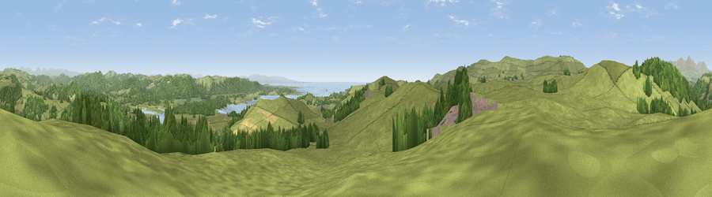

Viewpoint near Penny Bridge
#4868 in England · top 27% of its area beats it · near Penny BridgeThe view, rendered

A 360° render of this exact spot computed from the terrain model, tree cover and land cover — summer colours, afternoon light, calibrated against photographs of famous viewpoints. Real trees, hedges and buildings will differ in detail.
The panorama
Grey silhouette: terrain skyline in each direction (720 bearings, Earth curvature and refraction included). Dashed green: skyline with trees (+15 m) and buildings (+8 m) as obstacles. Blue strip: how far the ground is visible on each bearing.
Where the view opens
Wedge length = distance to the farthest visible ground on that bearing (vegetation-aware). Rings at 10, 25 and 50 km.
What fills the view
63% grassland · 31% woodland · 4% water · 2% cropland
Angular shares of the visible panorama (visual magnitude), not map area. Landscape diversity 0.39 (0–1 Shannon).
Key numbers
More beautiful places nearby
The staircase of upgrades: each row has a higher view potential than everything closer. Driving times are estimates from straight-line distance, calibrated against real road routing — check an actual route before setting out.
| Place | Direction | Drive | Score |
|---|---|---|---|
| Viewpoint near Greenodd | SE · 1 km | ~4 min | 73.9 |
| Hoad Hill | SSW · 4 km | ~9 min | 74.4 |
| Viewpoint near Broughton Beck | W · 4 km | ~10 min | 79.9 |
| Viewpoint near Grizebeck | WNW · 4 km | ~10 min | 80.9 |
| Viewpoint near Low Wood | E · 5 km | ~11 min | 83.0 |
| Viewpoint near Wall End | W · 6 km | ~12 min | 83.2 |
| Viewpoint near Cartmel | ESE · 6 km | ~13 min | 87.2 |
| Viewpoint near Finsthwaite | NE · 10 km | ~20 min | 90.3 |
54.23681, -3.07050 · source: screening · position refined by local search. Computed location — check access rights before visiting.